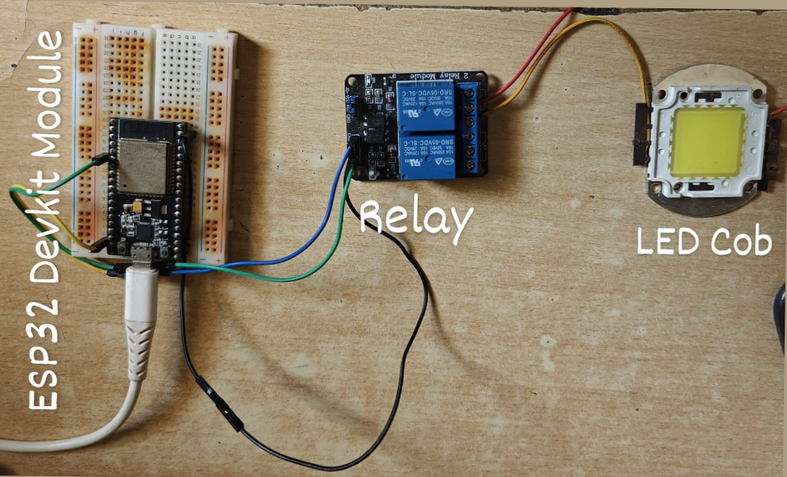
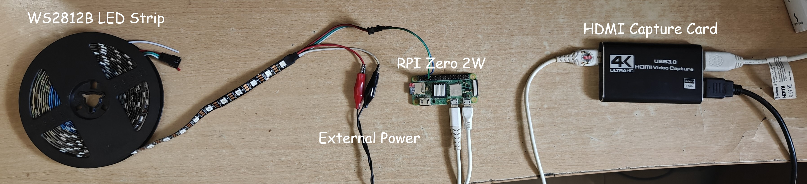
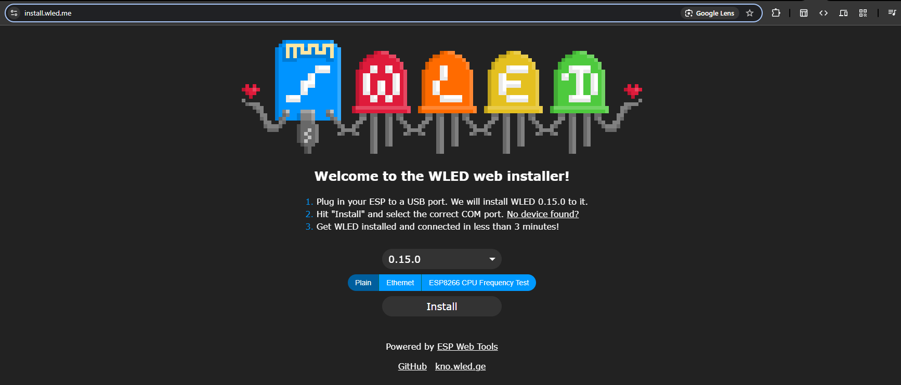
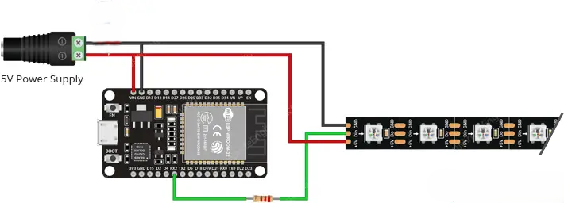
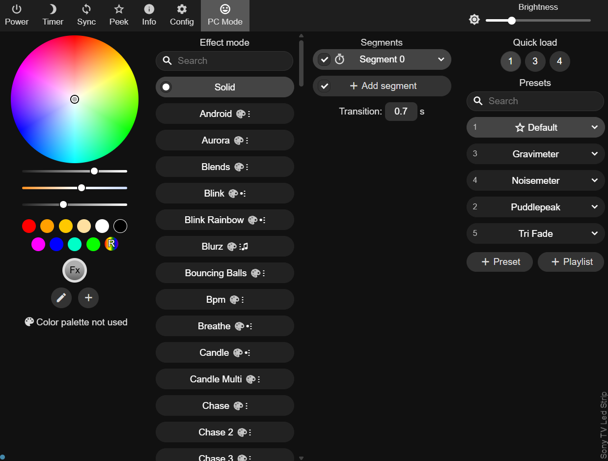
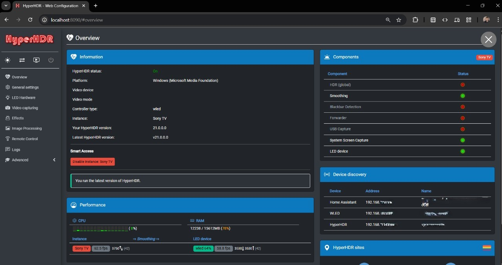

Ever been mesmerized by the pulsating lights synchronized to the music at concerts like Ultra Miami or Tomorrowland? That vibrant, immersive energy was the initial spark for a project that has evolved significantly over the years: building my own TV ambient lighting system. This post chronicles that journey, from simple beginnings to a fully integrated smart home feature.
The Spark: Inspiration and Early Experiments (Pre-2019)
Beyond the allure of concert lighting, my older brother introduced me to the concept of Ambilight back around 2017-2018, pointing me towards early open-source projects on GitHub. At the time, the cost was prohibitive for me as a student. These early solutions primarily relied on Raspberry Pi boards, and factoring in all the necessary components, the price tag exceeded ₹10,000 – a sum my parents understandably wouldn't approve for an electronics experiment.
My initial, far simpler solution was a static blue LED strip behind the TV. But the desire for reactive lighting persisted. I researched ways to make the strip react to sound. An early attempt involved connecting a microphone directly to the 12V LED strip. Having minimal electronics knowledge then (fueled more by movie depictions than practical understanding!), I overlooked the voltage incompatibility (3.3V mic vs 12V strip). Predictably, the microphone burned out, although thankfully the LED strip and power adapter survived.
A few weeks later, I discovered a more viable approach: using a transistor (likely a common BJT like a TIP31, though the exact model escapes me now) and feeding an audio signal directly from an AUX cable. The transistor amplified the audio signal, driving the 12V LED strip and making it pulse with the music. Success! It was rudimentary but effective, and I was hooked for weeks.
Iteration and the Shift to Smart Control (2019 onwards)
I continued iterating, experimenting with microcontrollers like Arduino. While technically feasible, the Arduino-based reactivity never quite matched the analog simplicity and effectiveness of the transistor setup for pure sound reactivity.
My interest soon shifted towards automation using WiFi-enabled microcontrollers, specifically the ESP8266/ESP32 family. After weeks of research, prototyping, and learning heavily from resources like YouTube and Reddit (invaluable platforms), I successfully built a WiFi-controlled LED strip. This version connected to the Adafruit IO cloud platform, allowing me to control the lights remotely from anywhere.

Discovering the Power Trio: OpenRGB, WLED, and Addressable LEDs
This success paved the way for exploring broader home automation concepts. During this research, I stumbled upon several game-changing open-source projects:
- OpenRGB: Created by CalcProgrammer1 (Adam Honse), this software unified control for RGB peripherals across different brands. Crucially, it introduced me to its capability to synchronize lighting effects, including music visualization.
- Addressable LED Strips (WS2812B): Unlike my previous simple strips, these allowed individual control over each LED pixel, opening up a universe of complex effects.
- WLED: Developed by AirCookie, I initially overlooked this, thinking it was similar to OpenRGB. I would later realize its immense potential.
To utilize OpenRGB's capabilities, I needed a WS2812B strip. These cost around ₹1500 for 5 meters at the time. I pooled my own savings (₹500) and convinced my parents to help with the rest. Connecting the new strip to an Arduino and running OpenRGB on my PC was a revelation. The ability to control individual LEDs and utilize OpenRGB's music control plugin was leaps ahead of my previous setups. However, the Arduino Uno's limited power output necessitated an external 5V power supply to achieve reasonable brightness.
The Ambilight Challenge: Bringing Reactive Lighting to the TV
My goal now was to adapt this setup for true TV ambient lighting – dynamically matching the colors on the screen edges. This presented new challenges:
- Wireless Connectivity: Arduino lacked native WiFi.
- Self-Dependency: OpenRGB required my PC to be running constantly.
- Video Signal Capture: How to get the TV's display information to the LEDs?
Attempt 1: The Raspberry Pi Approach (2022)
Remembering my brother's initial suggestion and having acquired a Raspberry Pi Zero 2W by 2022, I revisited the original Ambilight concept. I used HyperHDR (a popular fork of Hyperion-NG with improved HDR handling) running on the Pi. This required an HDMI splitter and an HDMI-to-USB capture card to grab the video signal, process it on the Pi, and directly drive the WS2812B strip connected to the Pi's GPIO pins.
It worked! However, the setup felt "janky," with multiple devices and wires behind the TV. The Pi Zero 2W occasionally overheated and hung during long sessions. Furthermore, this setup bypassed WLED entirely, meaning I lost all its features (presets, effects, app control, sound reactivity) unless I manually switched the LED strip's data line between the Pi and a separate WLED controller. Given that I was integrating WLED into Home Assistant for automation, using this Ambilight setup only 5-10% of the time felt inefficient.

I realized I needed a more integrated solution that could seamlessly combine the Ambilight effect with the full range of WLED's features. This led me to explore the potential of WLED further, especially its ability to run on ESP32 modules, which indirectly also offered better performance and flexibility than the Pi setup for this specific application.
Attempt 2: The WLED + HyperHDR Synergy (2023 - Present)
Around 2023, I revisited WLED, now understanding its true capabilities. WLED runs on ESP32 modules, providing WiFi, more processing power than an ESP8266/Arduino boards, and a vast array of integration options (MQTT, E1.31/sACN, HTTP/JSON APIs, Philips Hue compatibility, ALEXA, etc.). Crucially, it could receive lighting data wirelessly which arduino couldn't.
I realized I could run HyperHDR on my laptop instead of a dedicated Pi reducing cost and compute bottlenecks. When I wanted Ambilight, I'd simply:
- Connect my laptop to the TV via HDMI.
- Run HyperHDR on the laptop.
HyperHDR automatically captures the screen content (eliminating the need for splitters/capture cards in this configuration), processes the edge colors, and sends the lighting data over WiFi to the ESP32 running WLED using the E1.31 or UDP protocol. This was a much cleaner, more flexible solution.
A significant advantage of this approach is the surprisingly low latency. Sending data wirelessly via E1.31 or UDP protocols directly to the ESP32 running WLED is quite efficient. While perfectly suitable for movies and general content, the perceived latency can be further fine-tuned by adjusting settings within both HyperHDR and WLED, such as the LED refresh rate and smoothing options.
My Current System: A Smart, Integrated Setup
Today, my setup combines the best of all worlds:
- An ESP32 running a WLED instance controls the WS2812B strip behind the TV, offering numerous presets, effects, sound reactivity (via a connected digital microphone), and control via web UI or app.
- HyperHDR runs on my laptop for Ambilight when watching content from it, sending data wirelessly to WLED.
- Home Assistant, running on a virtual server on my PC (shifted to Raspberry Pi 4b), integrates with both my smart TV (or Fire TV stick previously) and WLED. It automatically turns the WLED strip on/off (usually to a default preset like soft white) based on the TV's power state and also allows full control directly from the Home Assistant dashboard.
- WLED's built-in power monitoring estimates consumption (crucial for high-draw WS2812B strips!) and sends this data to Home Assistant for logging.
Build Your Own: Hardware, Software & Setup Guide
Inspired? Here’s a guide based on my current setup to build your own WLED-based lighting system, which can serve as a foundation for Ambilight, sound reactivity, or advanced smart lighting.
Hardware Required:
- Addressable LED Strip: WS2812B or SK6812 (5V). I use 60 LED/m.
- Microcontroller: ESP32 Development Module.
- Power Supply: 5V DC, appropriately rated.
- Resistor: ~330-470 Ohm resistor for the data line.
- Microphone: INMP441 Digital I2S Microphone Module.
- Jumper Wires, Power Injection Wires (14-16 gauge).
Software Required:
- Primary Controller: WLED
- For Ambilight: HyperHDR
- For Automation: Home Assistant (Optional)
Step 1: Flashing WLED onto the ESP32
- Connect the ESP32 Dev Module to your PC via USB.
- Go to install.wled.me
- Click "Install" and select the correct COM port.

Step 2: Configuring WLED LED Preferences
In WLED, navigate to Config > LED Preferences. Set "Type" to "WS281x" and enter your total LED count. Calculate your power needs carefully—enable the "Automatic brightness limiter" to match your PSU.
Step 3: Wiring the Hardware

Step 4: Setting Up HyperHDR
Launch HyperHDR, go to LED Hardware, and set "Controller type" to "WLED" with your ESP32's IP. Use the LED Layout tab to define your screen dimensions.
Step 5: Home Assistant Integration (Optional)
In Home Assistant, go to Settings > Devices & Services and add the WLED integration. This allows you to automate the lights based on TV state.
Step 6: Native Sound Reactivity Setup (Optional)
Connect the INMP441 microphone (SD to GPIO 32, WS to 15, SCK to 14 on ESP32) and enable the Sound Reactive usermod in WLED.
Conclusion
What started as a simple desire for reactive lighting evolved into a core component of my smart home setup. This DIY Ambilight project has been incredibly rewarding, blending software, hardware, and creative problem-solving.
Project Gallery
Here are some additional photos and videos showcasing different stages and aspects of the project:

